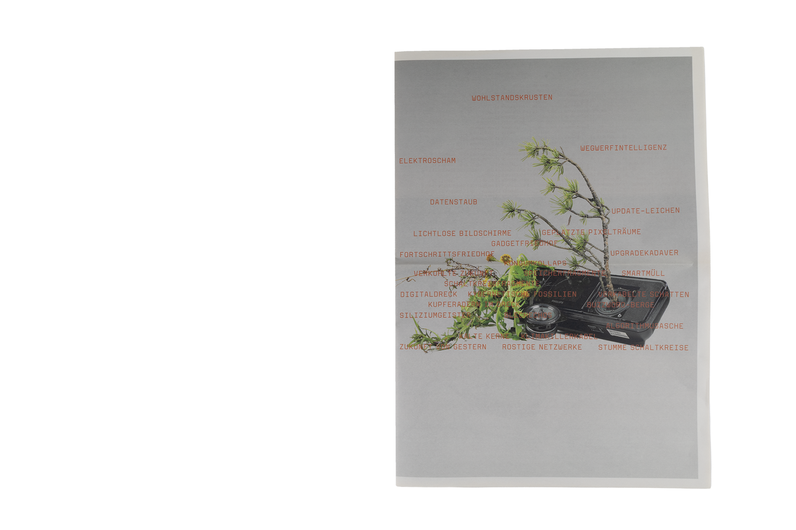
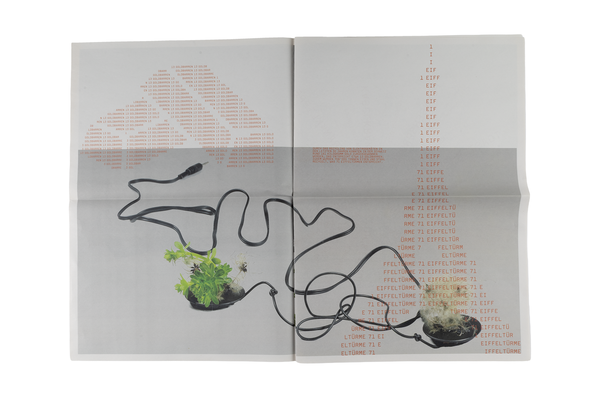
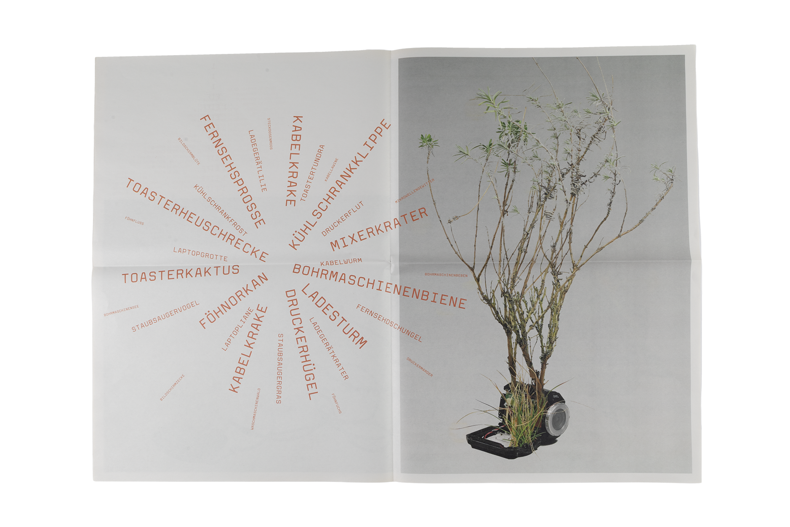
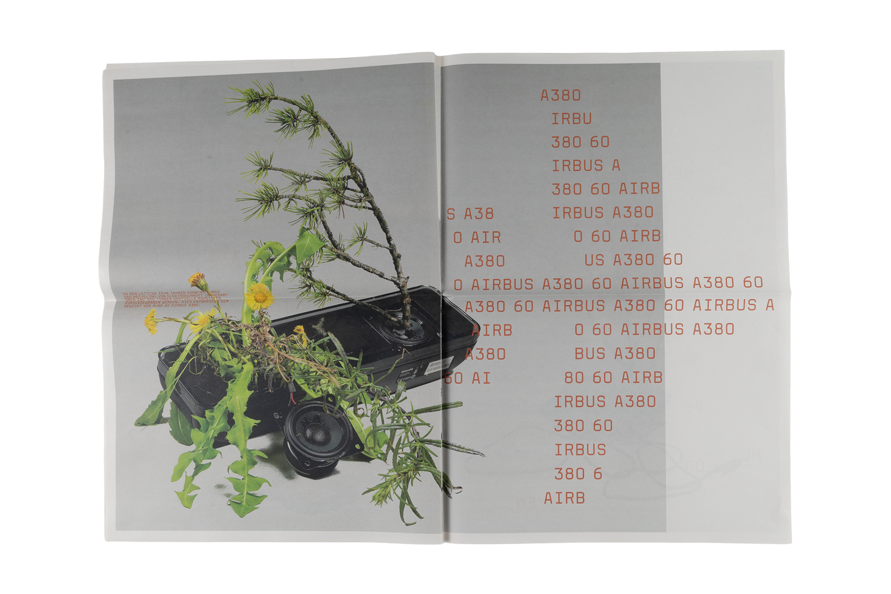
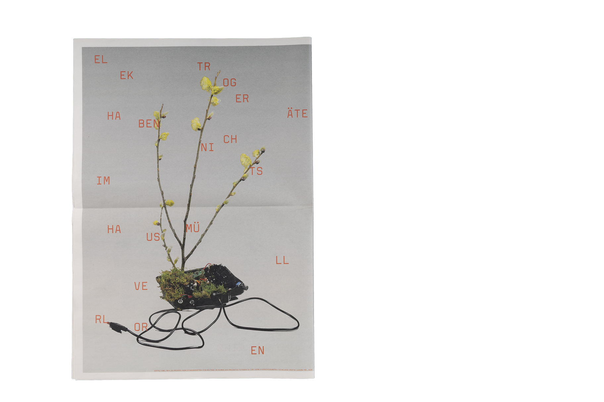

Projects
About me
HIDDEN TREASURES
When you realize just how much material is tucked away inside old devices, e-waste suddenly stops looking like mere trash. Building on our Blickwechsel (Change of Perspective) poster, this newspaper expands on that shift in mindset. The focus lies on demonstrating the vast amounts of valuable raw materials that can be reclaimed through recycling. To make these dimensions easier to grasp, I use diagrammatic comparisons — for instance, highlighting that over 240,000 tonnes of material have been recycled over ten years, which is roughly equivalent to the weight of 60 Airbus A380s. This makes the immense potential hidden within e-waste truly tangible.





Photography
Martin Woodtli
Felix Pfäffli
Martin Infanger
Pisonic Zvonimir
2025